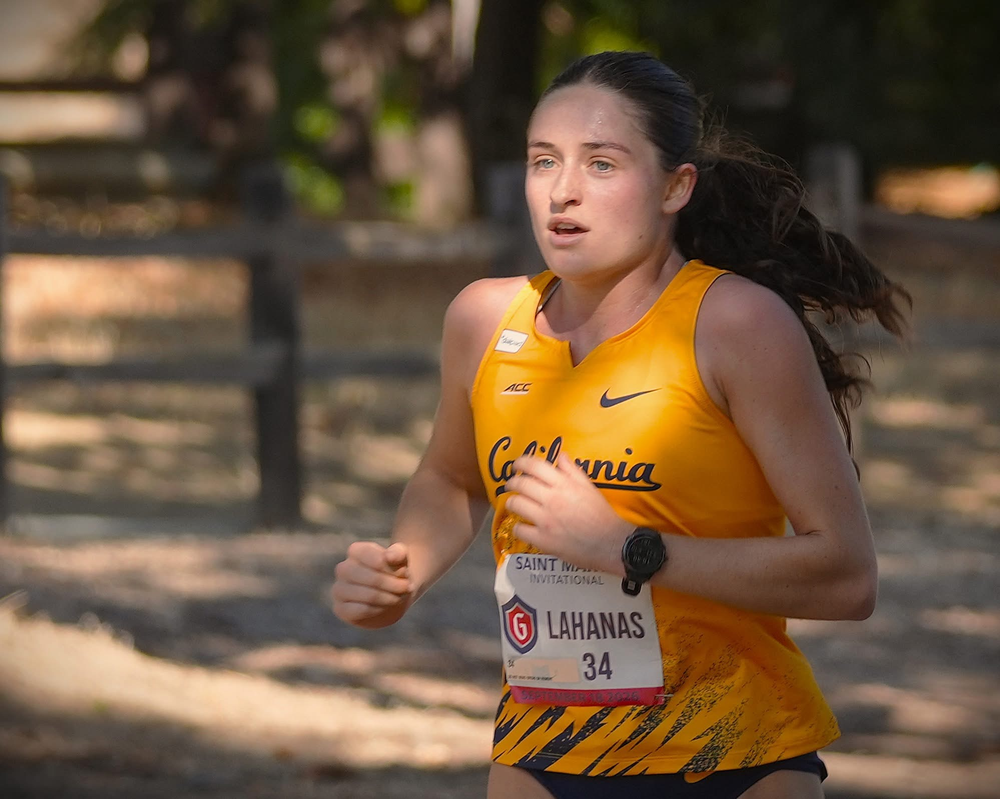
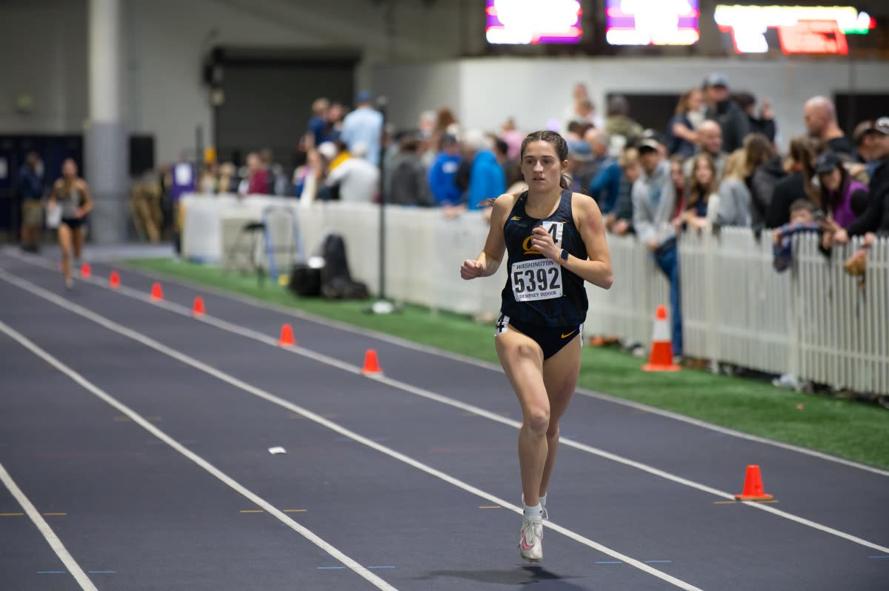
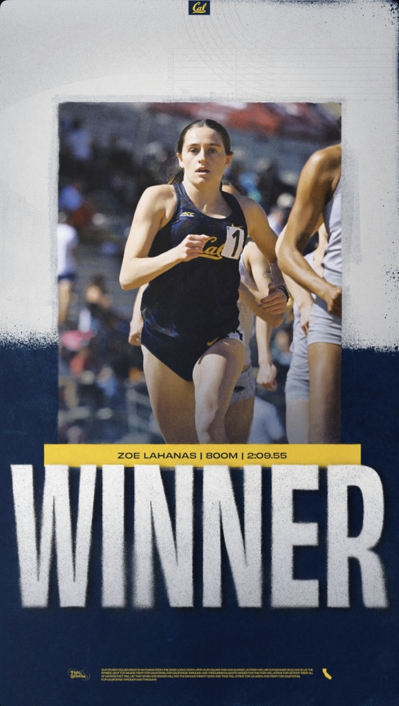
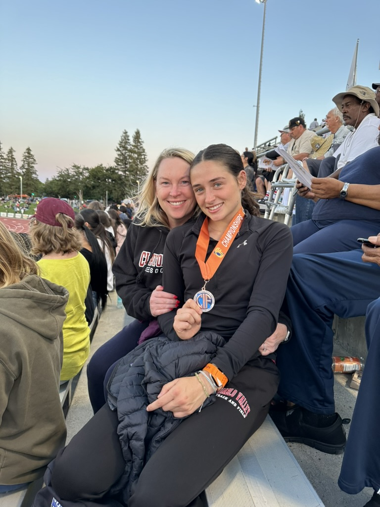

Three seasons. No off-season. — Cross country · Indoor track · Outdoor track · Division I.

I compete across all three seasons for Cal — cross country in the fall, indoor track in the winter, and outdoor track in the spring. Year-round training and competition have sharpened my discipline, resilience, and ability to perform under pressure.
21:27.1
Awarded by the Atlantic Coast Conference to student-athletes who maintain a minimum 3.0 cumulative GPA while competing at the Division I level. The honor recognizes the balance of rigorous academic coursework alongside a full schedule of training and competition.
Serving as a student-athlete representative on the Atlantic Coast Conference Student-Athlete Advisory Committee — advocating for the needs and well-being of student-athletes conference-wide.


Ran a personal best of 2:09.55 in the 800m at the Brutus Hamilton Invitational — my first win as a Golden Bear. The race marked a breakthrough moment in my collegiate career, crossing the line first in a PR that stands as my outdoor best.

Recruiting for an internship or co-op? I'd love to hear from you at zoelahanas@gmail.com.